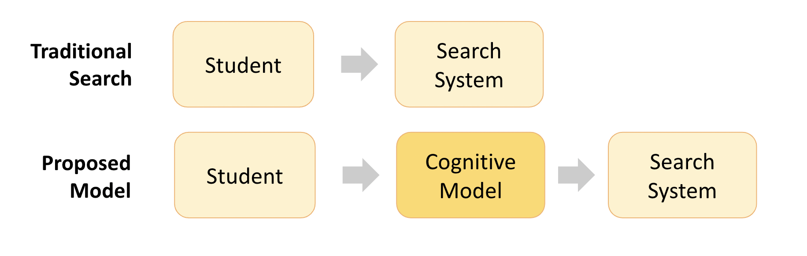

Rohail M. Syed
Email: rmsyed@umich.edu
Phone: (734)-474-5198
Phone: (734)-474-5198
I am passionate about work on social good using machine learning and engineering! In the past I've
worked on Facebook's COVID response efforts, research on empowering scalable Education in Information Retrieval systems
and explainable Misinformation detection.
I'm increasingly intrigued by the possibilities of Virtual and Mixed Reality and AI-assisted content creation.
I'm increasingly intrigued by the possibilities of Virtual and Mixed Reality and AI-assisted content creation.
Work Stuff
-
 Google - Software Engineer [2022- Present]
Google - Software Engineer [2022- Present]
After having worked on health topics and analytics at Meta, I wanted to explore more technical product work. I joined a small team in Youtube as an engineer where I've worked on buiding out new features in Youtube search and exploring how to use ML to improve search ranking. While I'm still early at the company, I'm very optimistic about the roadmap we've set and what we'll accomplish in the coming year!
-
 Meta - [Data Scientist, 2020 - 2022]
Meta - [Data Scientist, 2020 - 2022]
Joined Meta (née Facebook) as COVID was really kicking off in April 2020. I was excited to work on this as it became apparent COVID may not be going away soon 😕. I recognized that platforms like Facebook, Instagram and Twitter would inevitably play a crucial role in disseminating information as we all tried to keep up with the rapidly-evolving knowledge and guidance.
I worked on improving methods to identify COVID- and Vaccine-related posts at scale and developing precise targeting to avoid unnecessary information overload. With the vaccines rollout in early 2021, I led a team of 4 to quickly build detection logic to provide contextual links to reliable COVID information to over 100M+ users per day and I helped improve our Vaccine content detection recall by more than 50%.
This was an incredible experience and gave me great insight to some of the complexities of technical and social challenges in social media work.
I learned about the unique complexities of scaled detection of a rapidly-evolving topic. I learned about the complex tightrope between promoting credible and current scientific consensus while also respecting freedom of expression. Most importantly this helped me better appreciate the best-faith efforts that often happen behind the scenes and the layers of nuance we often don't observe from the outside looking in.
-
 Microsoft Research - [Research Intern, 2019]
Microsoft Research - [Research Intern, 2019]
My internship at Microsoft was my first experience in the industry so needless to say I was excited!
Misinformation and "fake news" were very prominent and concerning themes in society. Most past research on identifying misinfo hinged on black-box models. This could be good for model performance but difficult for clearly articulating the question of why? this is misinfo to an end user.
Our team applied existing concepts in deep learning and ML question-answering to build a novel approach to explaining why an article might be misinfo, empowering the user to be more informed and make the independent determination of whether they agreed with our reasoning.
In a time of increasing distrust of "Big Tech", the tech industry needs to further explore similar paradigms of "Hey, here's why we think this might be misleading." as compared to "Hey, we think this is misinfo. Don't ask how.".
-
 University of Michigan - [PhD, 2014 - 2020]
University of Michigan - [PhD, 2014 - 2020]
After some previous internship and side project work on education technology, I was excited to learn more about the state-of-the-art in scalable learning and how I could improve on it!
I joined the PhD in Information program at Michigan in 2014 working with my advisor on the specific area of "Search as Learning". At a high level we focused on building and applying cognitive models (signals to proxy people's knowledge state) in the traditional paradigm of User -> Search System to help people learn better.

The construction of these cognitive models varied for each application we explored. In one area we explored how to improve people's vocabulary knowledge. We used explicit multiple-choice assessment of prior knowledge as a signal and optimized search results for the knowledge gaps. For difficult vocabulary words, the resultant SERP re-ranking yielded +28% short-term knowledge [SIGIR'17] gains and up to +85% long-term knowledge [CHIIR'18] gains compared to standard Google search results.
In another study we used gaze tracking signals of how much text a user had read in an article. Our cognitive model explored how to optimize real-time injection of questions in the text using gaze tracking as a signal. We found almost 50% higher long-term knowledge [WWW'2020] compared to users who did not get dynamic questions.
These were some early explorations in the broader field of Intelligent Tutoring Systems and there is so much more to explore! I hope to further explore the benefits of personalizing educational content itself for deeper user connection. This could include areas like personalized synthethic texts/videos and conversational AI to meet learners where they are when they get stuck.
Side Projects